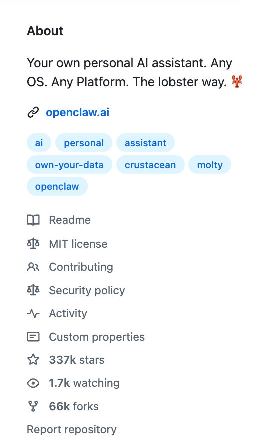
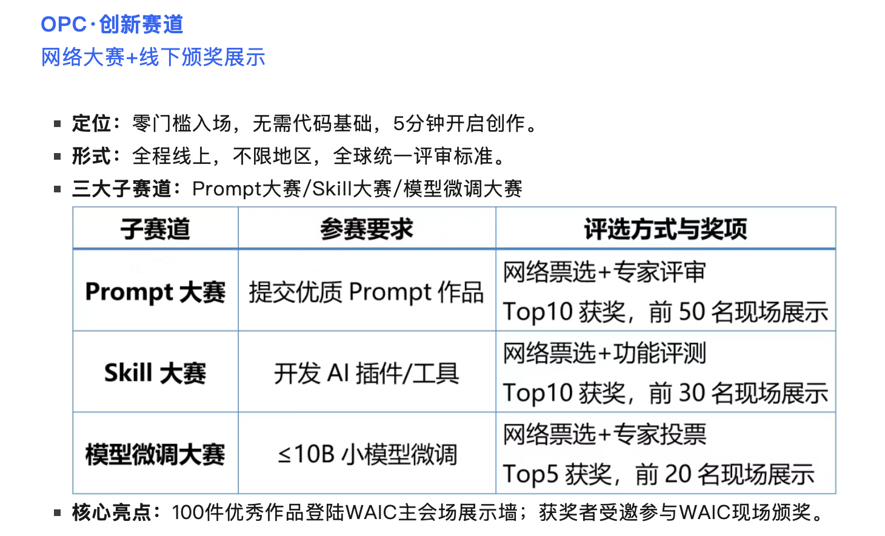
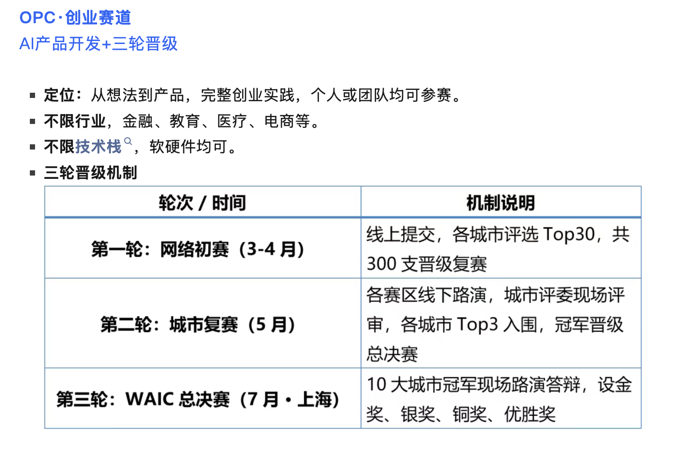
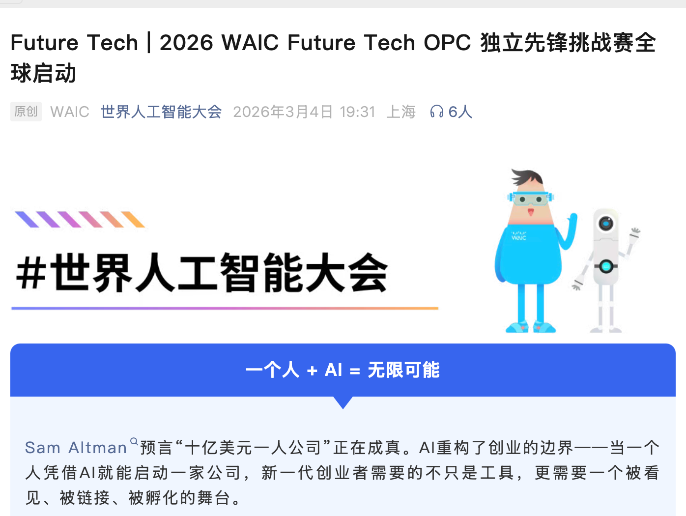

C1
必修 · 5节
AI工具与核心概念
从零建立对AI的完整认知
讲师：陈放
从零建立对AI的完整认知
讲师：陈放
从OpenClaw说起
OpenClaw是一个AI Agent运行框架
它能让AI真正"动手"操作你的工具
把复杂系统简化成AI能理解和调用的"技能"

AI能执行的具体任务
协调与决策中心
连接外部世界
AI的大脑
理解这个分层，你就理解了学习AI的正确顺序
对应学习阶段一：学会用
模型是AI的"大脑"，负责理解意图和生成内容
主流大模型：
学习AI，首先要会用这些大模型
对应学习阶段二：学会连
网关让AI能调用外部工具和服务
类比：MCP就是AI的"USB-C接口"，统一标准，即插即用
对应学习阶段三：学会搭
Pi Agent是协调者，负责理解意图、拆解任务、调度技能
示例："帮我整理会议纪要并发邮件"
对应学习阶段四：学会建
技能是可复用的能力模块
就像乐高积木，拼起来就是完整应用
查订单
发邮件
生成海报
封装能力才能产生复利：一次开发，多次收益



别纠结原理
先用，在实战中理解
能把AI接入业务场景
比选什么模型更关键
把经验变成可复用技能
一次开发，多次收益
每天都有新产品、新技术冒出来，都说自己是"现象级"、"颠覆性"
新产品刚出时问题多、说法纷纭，测试后往往发现也就那么回事
等1-2周，甚至1个月后还在讨论的产品，才值得学
时间是最好的过滤器，能活过一个月还保持热度的产品才是真需求
AI变化太快，过几周就会有新的替代品出现
踩过的坑：买了Cursor → 限制Claude 3.5 → 又买Claude Code → 又买全家桶
沉没成本心态，是学AI路上最大的敌人
哪个好用用哪个，随时准备切换，不要死磕已付费的工具
最不欢迎AI的往往是程序员："手写代码比AI写的好"
普通人因不了解技术细节，对新技术有更好的接受度
部分视频号博主（清华美院李一舟等）说起AI应用比大部分程序员清楚
关键看态度：拥抱变化的人，才能教你怎么用好AI
博主：通向AGI之路、秋芝2046、李一舟
进阶：Andrew Ng 的AI课程
工具：腾讯IMA、豆包、Cursor、NotebookLM、Claude Code、Manus
理论：李飞飞《Agent AI》论文
完美主义 - 等完全搞懂了再用，永远等不到那天
沉没成本 - 花钱买了工具就死磕，浪费时间
AI不是看会的，是用会的
你觉得你在哪个阶段？
会用模型（模型层）
会接工具（网关层）
会搭工作流（Pi Agent层）
会封装技能（技能层）
会设计系统（四层融会贯通）
学会Prompt基础
掌握核心概念
学会接业务
实战应用
选修深化
按角色选课
完成
毕业项目
任务说明：
用一张表格规划你的AI学习路径
评估你的当前能力等级
设定你的目标等级
列出具体的行动计划
画布模板
| 当前能力 | 目标能力 | 行动计划 |
|---|---|---|
| 只会聊天 Lv.1 | Lv.2 | 完成C2作业 |
| ... | ... | ... |
| ... | ... | ... |
| ... | ... | ... |
C1 · Chapter 4 · 我们应该怎么学习AI呢？